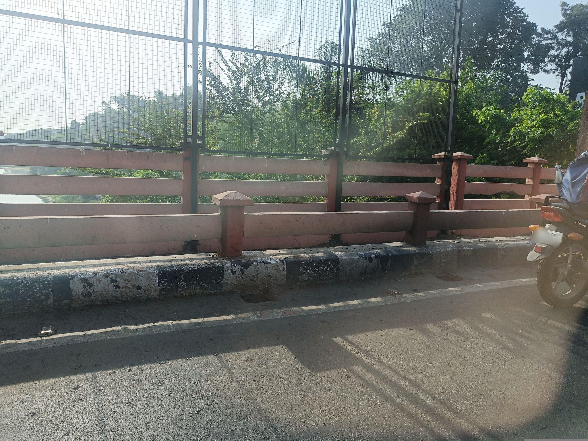

Visibility limited
539546609009479
5 May 2025, 7.4 m from the September 2025 camera position. Side-window view of the fenced bridge railing and kerb with no waste; the frame faces the river side rather than the verge where the dump was seen.